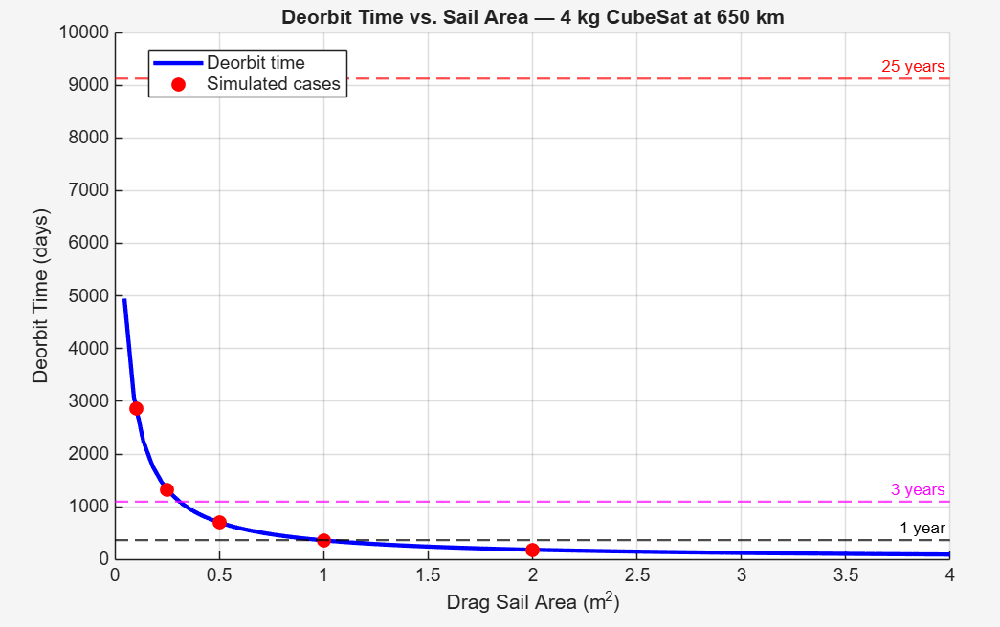
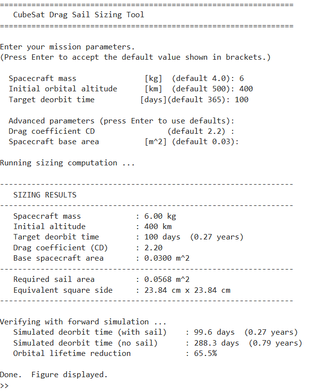

The problem
Passive debris mitigation
Many CubeSats do not carry propulsion for controlled disposal. This project investigates how a deployable drag sail can increase area-to-mass ratio and shorten orbital lifetime without propellant.
Spaceflight Mechanics
A MATLAB orbital-decay model and inverse sizing tool that estimates the drag sail area required for CubeSats to meet selected deorbit timelines in low Earth orbit.
The problem
Many CubeSats do not carry propulsion for controlled disposal. This project investigates how a deployable drag sail can increase area-to-mass ratio and shorten orbital lifetime without propellant.


Method
ode45 and a 100 km reentry boundary.Key result
For the 4 kg, 650 km reference case, natural decay did not meet the 25-year guideline in the simulation window. A 0.5 m² sail reduced the modeled lifetime to approximately two years, while larger sails showed diminishing returns.
The parametric study also showed that required area rises strongly with altitude and approximately linearly with spacecraft mass.


Reusable output
The interactive tool accepts spacecraft mass, initial altitude, target deorbit time, drag coefficient, and base area. It returns the required sail area and verifies the design by comparing trajectories with and without the sail.